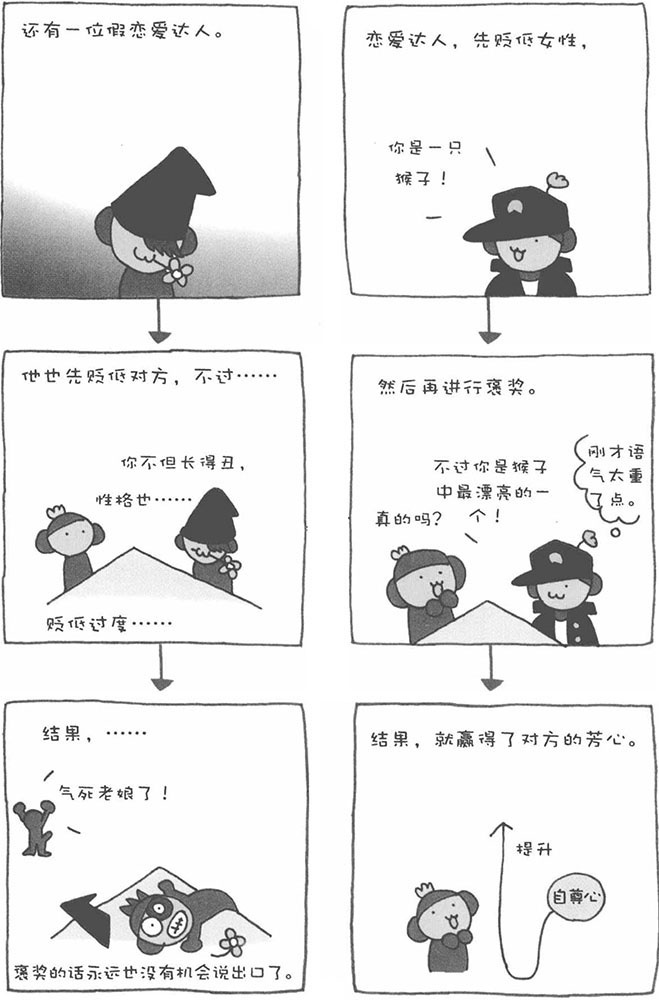

我认识一个人称"恋爱达人"的男士。他作派强硬，平时总是一副很酷的表情，但却经常俘获女性的芳心。与那种善于向女性献殷勤的男子不同，他从不主动表扬女性。那么，他究竟是靠什么赢得爱情的呢？
和女性谈话时，他一般比较冷淡。比如，他会说"你今天的妆化得太浓了"，一张嘴就是这样否定的口吻。不过，他并不是"毒舌男"。其实，他的内心比外表温柔多了。在贬低之后，他总会加上一两句褒奖的话，比如"本来很漂亮的脸，化那么浓的妆太可惜了。"听了这么一句话后，一般的女性都会对他产生好感。这到底是一种什么现象呢？先看一下以下四种说话方式，您认为哪一种最能让对方开心呢？
·从头到尾都是褒奖
·先褒奖，后贬低
·先贬低，后褒奖
·从头到尾都是贬低
实际上，最能让对方开心的方法并不是从头到尾一味地褒奖，而是先贬低后褒奖。先贬低，伤了对方的自尊心。然后再褒奖，使对方有种由低处往上升的感觉，能真实感受到被表扬的开心感。因此，这是褒奖女性的有效方法。
最要不得的就是先褒奖后贬低，这样只会把对方弄得非常郁闷。不过，如果后来的贬低与先前的褒奖之间的落差并不大，再加上适当的说话方式，也许由于最初褒奖的"开头效应"已经给对方留下一个好印象，之后的轻微贬低也不会引起对方太多的反感。然而，对于先贬低后褒奖的方法来说，如果掌握不好尺度，开始的贬低太过严厉，之后不管如果褒奖，也无法让对方开心。
